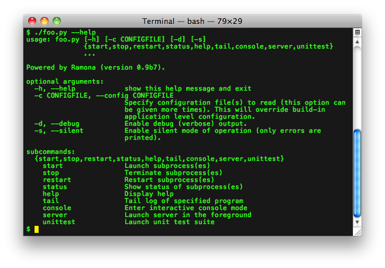
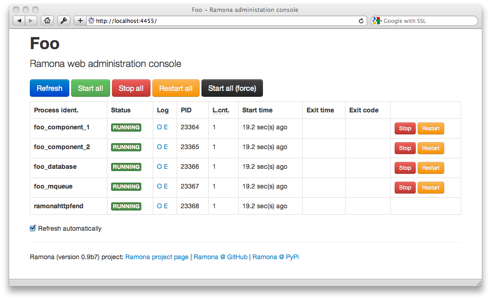

What is Ramona?
Ramona is a library or a component that is meant to be used by application developers to built convinient command-line interface of their applications for administrators, monitoring crew and even developers.
Among other features, it mainly ensures that each component (process) of an application is running, automates relevant restarts in case of a crash, monitors logs and process outputs and sends email notifications to administrators whenever error condition is detected.
Ramona is not an alternative to UNIX init process (nor to systemd, nor to Upstart). However, it enables the application to interact with such systems smoothly.
Target platforms are all modern UNIXes (Linux, ...), BSD derivates (Mac OSX, FreeBDS, ...) and Windows.
It is especially usefull in the environment of enterprise (large-scale) applications.
Quick introduction
Let's assume your project (named foo) directory looks as follow:
foo/
bin/
share/
src/
docs/
foo.py <--- this is Ramona
foo.conf
Ramona system will the provide you with following command-line API:

There is also optional web-based user interface:

Documentation and help
Download and Installation
Installation using pip
$ pip install ramonaInstallation using easy_install
$ easy_install ramonaDownload
- Python Package Index (PyPi)